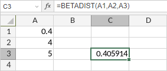

BETADIST funkcija
Funkcija BETADIST je jedna od statističkih funkcija. Koristi se za vraćanje kumulativne funkcije verovatnoće beta raspodele.
Sintaksa
BETADIST(x, alpha, beta, [A], [B])
Funkcija BETADIST ima sledeće argumente:
| Argument | Opis |
|---|---|
| x | Vrednost između A i B za koju funkcija treba da se izračuna. |
| alpha | Prvi parametar raspodele, numerička vrednost veća od 0. |
| beta | Drugi parametar raspodele, numerička vrednost veća od 0. |
| A | Donja granica intervala za x. Ovo je opcioni parametar. Ako se izostavi, koristi se podrazumevana vrednost 0. |
| B | Gornja granica intervala za x. Ovo je opcioni parametar. Ako se izostavi, koristi se podrazumevana vrednost 1. |
Napomene
Kako primeniti funkciju BETADIST.
Primeri
Slika ispod prikazuje rezultat koji vraća funkcija BETADIST.
